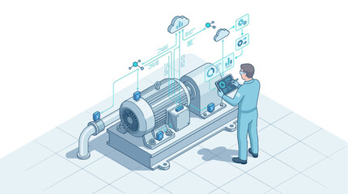

Inicio
Bienvenido a SmartPredict AI, una solución de inteligencia artificial enfocada en el mantenimiento predictivo industrial. A través del análisis de datos en tiempo real provenientes de sensores inteligentes, la plataforma anticipa fallas en maquinaria, optimiza procesos de mantenimiento y reduce significativamente los tiempos de inactividad y los costos operativos.
Quiénes Somos
SmartPredict AI es un proyecto académico enfocado en el desarrollo de una solución tecnológica que permite anticipar fallas en maquinaria industrial mediante el análisis de datos en tiempo real. Utilizamos sensores inteligentes e inteligencia artificial para procesar información y generar predicciones que ayudan a prevenir fallos críticos. Este sistema busca mejorar la productividad, reducir tiempos de inactividad y optimizar el mantenimiento en entornos industriales modernos. Es una propuesta innovadora orientada a la transformación digital de la industria.

SmartPredict AI: Mantenimiento Predictivo con Inteligencia Artificial
Sistema basado en sensores inteligentes e inteligencia artificial para anticipar fallas en maquinaria industrial y optimizar el mantenimiento.
Servicios o Productos
- Monitoreo de maquinaria en tiempo real
- Predicción de fallas con inteligencia artificial
- Alertas automáticas de mantenimiento
- Análisis de datos industriales
- Detección temprana de anomalías
- Optimización de planes de mantenimiento
- Generación de reportes y estadísticas
- Monitoreo de sensores IoT
- Reducción de tiempos de inactividad
- Visualización de datos mediante paneles interactivos
- Seguimiento del estado de equipos críticos
- Análisis predictivo del rendimiento de maquinaria
- Integración con sistemas de gestión industrial
- Notificaciones en tiempo real para operadores y técnicos
- Apoyo a la toma de decisiones basada en datos
Contacto
Email: smartpredictai@email.com
Teléfono: +593 999 999 999
Dirección: Ecuador
Redes sociales: Facebook | Instagram | LinkedIn